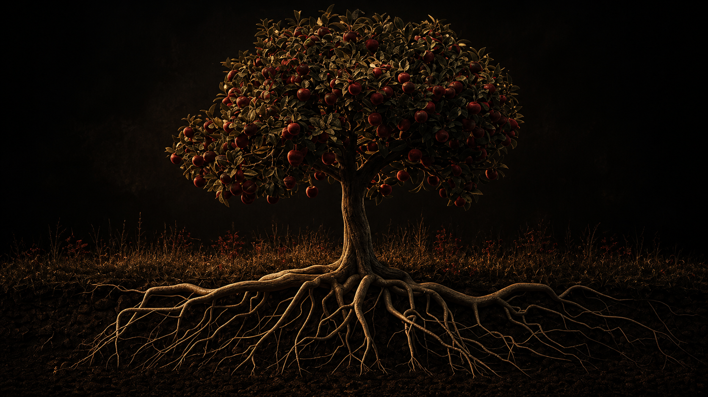
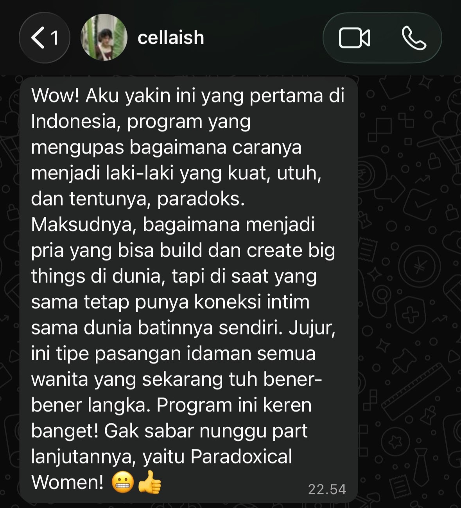
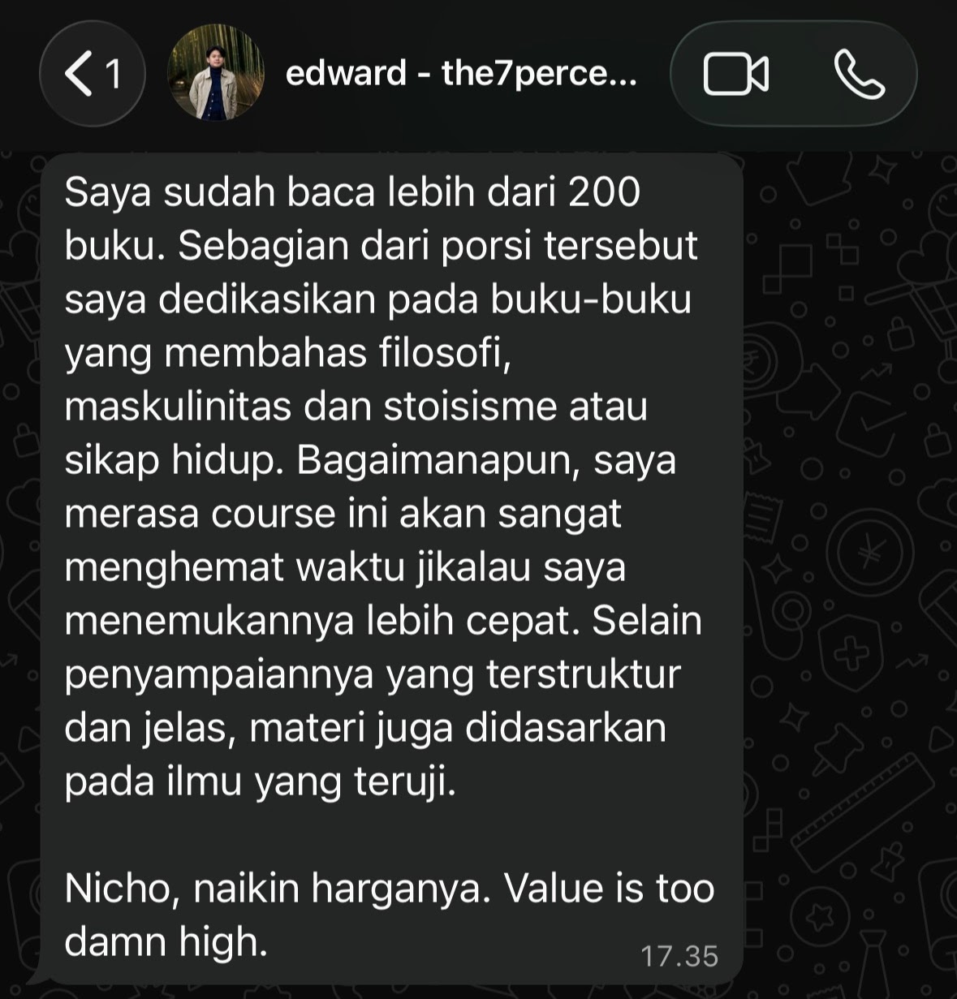
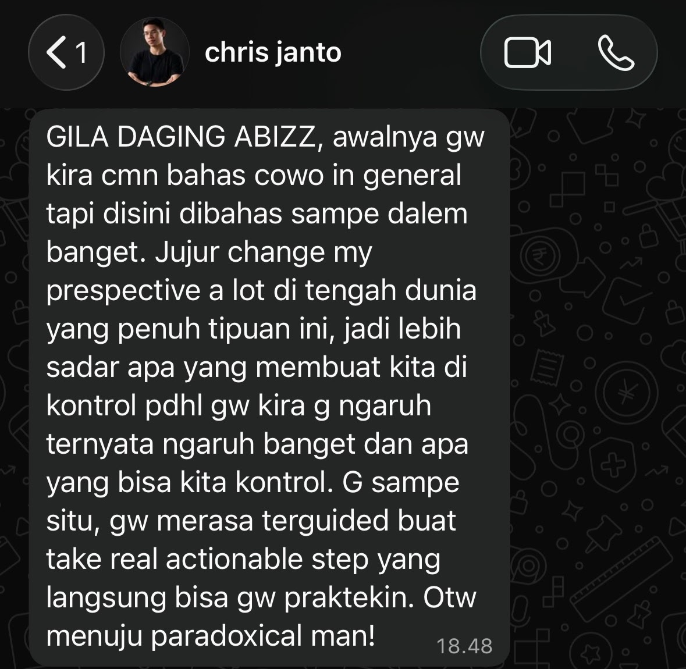
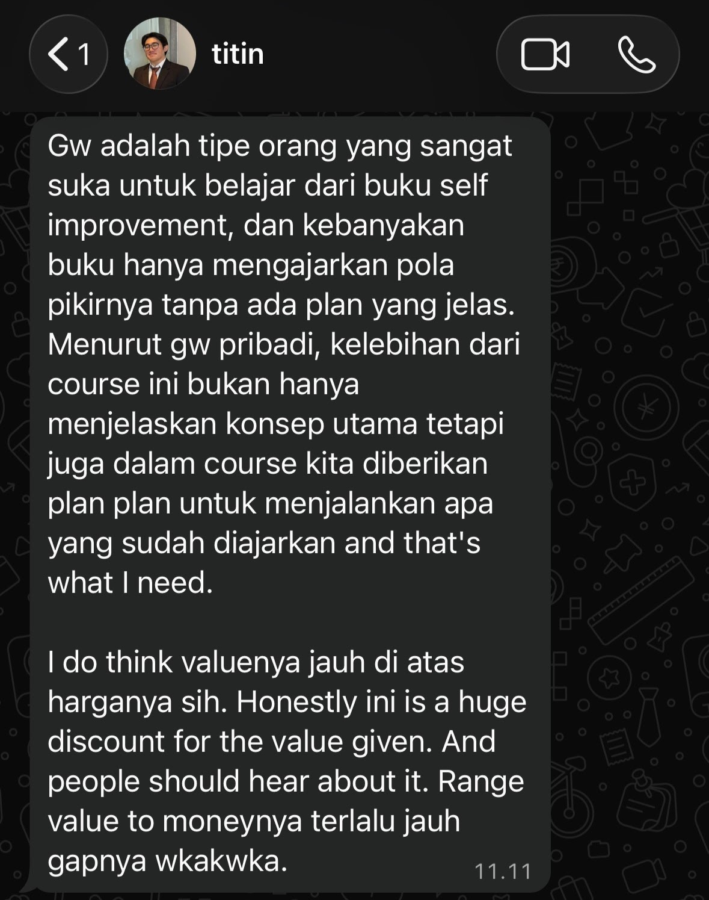
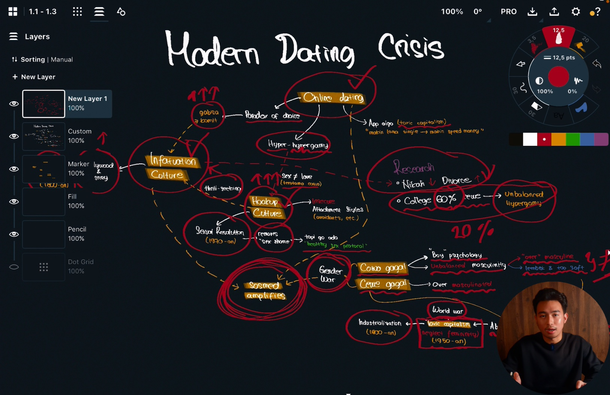
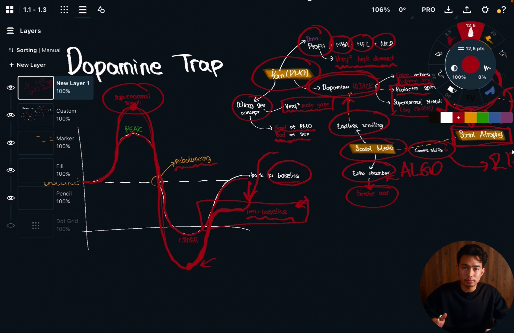
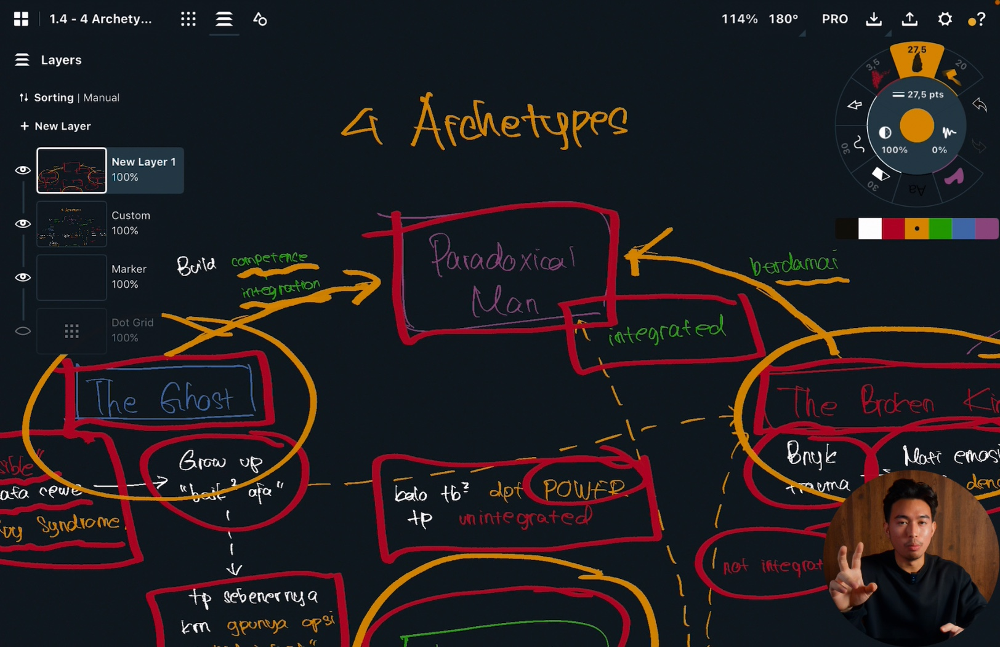

ROOT
Kelarin akar masalah, bangun pondasi yang selama ini bocor. Bukan pura-pura kelar, tapi beneran dibongkar dari sumbernya.
Lu bisa dapet pasangan yang bener-bener respect dan pilih lu tanpa lu harus pake topeng, bukan cuma sekedar jadi pilihan “aman”.
Tanpa trik, manipulasi, atau pick-up lines murahan.
Berangkat dari pengalaman hidup, diuji ulang lewat Evolution, Psychology, Philosophy, Society.
Pickup lines, cara chatting, cheap tricks. Works jangka pendek, fatal jangka panjang, dan malah bisa narik tipe cewe yang salah, bukan yang lu mau ajak serius.
Framework ini bukan main di level permukaan (cara chatting, dsb.), melainkan kita bakal masuk ke akar & pondasi sebenarnya. Yang bikin cewe jadi attracted itu cuma efek samping dari pondasi yang udah solid.

Analoginya: kayak buah dari pohon. Banyak orang fokus “menghias buah mereka” biar keliatan lezat & indah, tapi semua itu bakal sia-sia kalo akarnya sendiri ga sehat & ga kuat (termasuk pikiran bawah sadar lu).
Dengan lu fokus benerin akar, buah yang indah ini akan dengan sendirinya terbentuk.
Maksudnya bukan lu berhenti belajar komunikasi atau ngerawat diri. Tapi itu ga cukup kalau lu masih hidup di atas pondasi yang rapuh.
Centang yang kena di lu.
Yang lu takutin
Yang lu capek
Yang lu pengen
Yang bikin lu bingung
Kalo minimal dua kena, framework ini buat lu.
Bukan rangkuman textbook, bukan juga ngarang sendiri.
Ini lahir dari pengalaman hidup gw sendiri yang udah terbukti. Tapi pengalaman doang gampang kejebak survivorship bias (works buat gw, bukan berarti otomatis works buat semua orang).
Makanya gw bedah ulang lewat studi lintas disiplin, 4 pilar: Evolution, Psychology, Philosophy, Society. Yang rontok pas diuji ulang, gw buang.
Baru jadi framework yang lebih utuh, bisa dirangkul banyak orang, bukan cuma kebetulan works di gw doang.

Yang Marcella sorot: sosok cowo yang kuat dan bisa bangun hal besar, tapi tetap punya koneksi sama dunia batinnya. Dia bahkan bilang, “Aku yakin ini yang pertama di Indonesia.”

Yang Edward nilai: pembahasannya terstruktur dan jelas. Menurut dia, value-nya jauh di atas harga sekarang.

Yang Christian rasain: lebih sadar apa yang selama ini ngontrol hidupnya, lalu punya langkah nyata yang bisa langsung dipraktekin.

Yang Justin butuhin: bukan cuma konsep, tapi plan buat ngejalanin apa yang udah dipelajari.

Lu nonton, lu catet, lu ngangguk. Tiga minggu lagi hidup lu balik ke pola yang sama. Itu namanya coli otak (ngerasa produktif dari konsumsi info doang, tanpa transformasi nyata). Yang belum lu punya itu SISTEM yang jalan pas lu ga mood, dan KOMUNITAS yang nanya pas lu ilang.
Kelarin akar masalah, bangun pondasi yang selama ini bocor. Bukan pura-pura kelar, tapi beneran dibongkar dari sumbernya.
Berdamai sama luka dan shadow (sisi gelap yang diam-diam ngendaliin cara lu mikir, ngerasa, dan ngambil keputusan).
Setelah dua itu kelar, lu unlock visi dan misi hidup yang beneran datang dari diri lu sendiri, BUKAN dari kompensasi luka yang belum sembuh.
🔎 Misal, lu pernah diinjek-injek terus mutusin, “gw harus jadi tegas 24 jam biar ga direndahin lagi.” Itu bukan RISE. Itu kompensasi dari RELEASE yang belum kelar. RISE baru kejadian kalo ketegasan itu keluar karena lu emang mau, bukan karena takut direndahin lagi.
Willpower bisa abis, sistem engga.
Empatik, dalam, lembut, DAN tetep kuat.
Lu gerak karena visi, bukan karena dendam.
Dapet pasangan idaman yang bener-bener milih lu jadi efek sampingnya, bukan tujuan yang lu kejar.
Yang GA gw janjiin: lu bakal punya pacar dalam tiga bulan. Ga ada yang bisa janjiin itu dengan jujur, karena itu ngelibatin manusia lain yang punya kehendak sendiri. Siapapun yang berani janjiin itu ke lu, lagi jualan sesuatu yang dia sendiri ga bisa pastiin.
Video course. Akses seumur hidup.
4 modul, urutannya sengaja. Lu ga bisa bangun visi hidup di atas pondasi yang belum kelar, dan lu ga bisa benerin pondasi kalo lu belum tau apa yang rusak.



Mind map asli dari dalem course. Tiap video dibedah kayak gini.
Mayoritas orang yang beli course online ga pernah kelar. Ruangan ini ada buat ngelawan angka itu.
Gampang bohongin diri sendiri. Susah bohongin orang yang tau lu lagi ngerjain apa.
Ini bukan coaching, dan gw ga standby 24 jam. Ini ruangan. Yang bikin dia hidup itu orang di dalemnya, termasuk lu.
Ini buat lu kalo:
Kalo minimal satu ini kena, lu di tempat yang tepat.
Ini bukan buat lu kalo:
Kalo empat-empatnya ga kena, lu udah siap.
Justru ini buat lu. Yang berasa “fine-fine aja” itu sering kali kondisi yang psikolog sebut languishing (ga depresi, tapi juga ga thriving). Stuck secara diam-diam, tanpa krisis yang jelas buat maksa lu berubah. Lu bisa jalanin sepuluh tahun kayak gini dan ga ada satupun alarm yang bunyi.
Jujur, ga ada jaminan. Tapi dua hal yang biasanya bikin orang ga kelar: ga ada yang tau dia berhenti, dan materinya ngajarin “apa” tanpa “gimana pas lagi ga mood”. Dua-duanya yang gw urus, lewat komunitasnya dan Modul 2. Sisanya di lu.
Ga perlu. Modul Diagnosis udah mencakup pondasinya, jadi lu bisa langsung mulai dari sini.
Cocok. Modul 1 emang didesain buat itu. Yang bahaya justru yang berasa udah ngerti terus loncat ke modul akhir.
Video course, plus 5 PDF workbook. Akses seumur hidup.
Ini bukan cuma soal harga yang bakal naik. Tiap hari lu nunda, pola yang sama, baik tapi ga direspect, atau kuat tapi mati rasa, itu makin ngeras jadi identitas lu, bukan cuma kebiasaan yang gampang diganti. Momentum buat berubah itu paling gede sekarang, pas lu lagi baca ini, bukan nanti pas lu “siap”.
Satu: lu tutup halaman ini, lu simpen niatnya, dan tiga minggu lagi lu balik ke pola yang sama. Bukan karena lu jahat sama diri lu sendiri, melainkan karena tanpa sistem, itu emang default-nya.
Dua: lu mulai bangun tamannya.